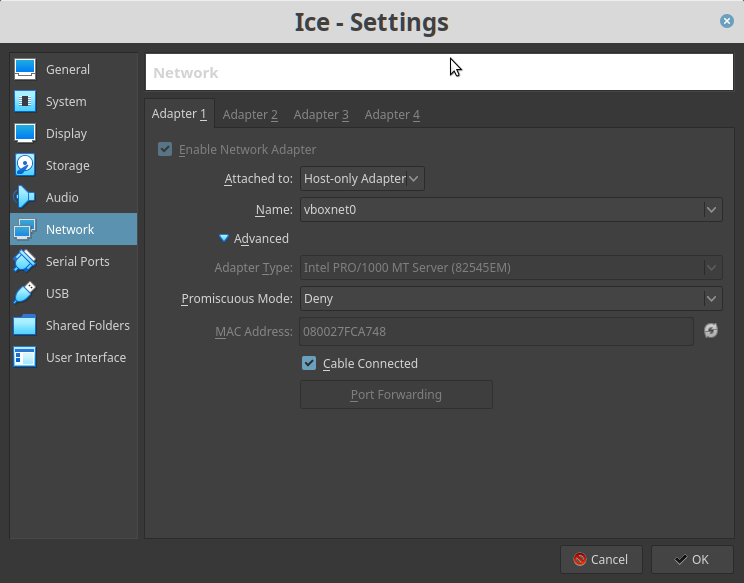
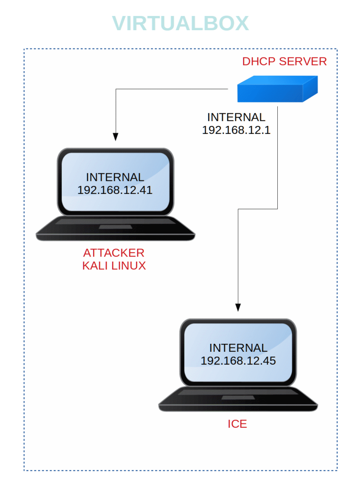

Ice
▸ Ice
▸ 1. Scan Network
▸ 2. Finding Services and Ports
▸ 2.1 db_nmap
▸ 3. Exploiting
▸ 3.1 Search exploit
▸ 4. Privilege Escalation
▸ 5. Post-explotiation
▸ 5.1 Crack passwords
▸ 5.2 Enable Remote Desktop
Deploy & hack into a Windows machine, exploiting a very poorly Secured Media server.
Difficulty: Beginner.
Learning:
• Discover network machine.
• Use dgb_map (Metasploit) to find opened ports, running services and vulnerabilities.
• Search exploit.
• Privilege Escalation.
• Crack password.
• Enable Remote Desktop.
Download: https://drive.google.com/open?id=19DnNlNWzNVSwiBYz5mxPWRPCWQmINzmz
Install the machine on VirtualBox:
1. Download the file and extract it.
2. On Virtualbox choose File->Import Appliance.
3. Select the file “ova”.
4. Accept to import.


Watch your Machine IP.

 Index
Index